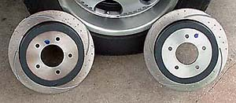
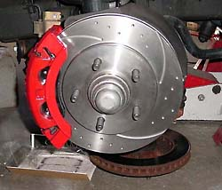
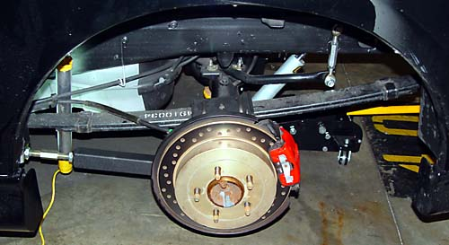

|
There are several rotor options, the most popular of which seems to be Ruslow's slotted and dimpled rotors, shown to the right. Ruslow (Stan Martin) is a dedicated road racer and does extensive R&D on all of his products. The price for the rotors is $290/pr. front, $250/pr. rear. These rotors are reported to show far less fade than stock (and they obviously look cool). Stan has also cooked up a 14" front kit with adapters for the stock calipers, but it may never be offered for sale. Stan reports that his 12" replacement rotors, when combined with aftermarket pads and religious fluid changes, will work fine even for open track events. Contact Stan Martin through his forum at NLOC. Note: the cracked Ruslow rotors above were on Spike Engineering's truck. He cracked them by not allowing them to cool down enough before parking after some hot laps. According to Stan: "The BIG thing to remember when you are driving aggressively in open tracks or hard, is you have to do a cool down where you are using the brakes a min. so they have time to gradually cool down. Also need to make sure your wheel studs are torqued down correctly." I recently bought some used AutoSpecialty PowerStop cross-drilled rear rotors (part #'s AR-8559R, AR-8559L). While cross-drilling is typically a bad idea (weakens the rotor), they are a cosmetic match for the Brembo fronts and too tempting to pass up. The rear rotors are subject to minimal abuse anyway. I have not had any issues with them. One handy tip for stuck rear rotors from Sal Manella of Powersurge Performance: Soak the rotors with WD-40 by squirting around the wheel studs and the hub/rotor joint. Then strike the rotor with a metal hammer in between the lugs and around the circumference of the hub part of the rotor. Repeat this wd-40/hammer process two or three times, allowing the WD-40 a few minutes to soak in each time. Then, through the space for the caliper, knock the rotor free with a dead blow mallet or a piece of wood placed on the rotor and struck with a metal hammer. I confess that I eventually just hit the rotor with a metal hammer because it was quicker and was tossing the rotors anyway. Sal says this method works 100% of the time. Worked for me, and my rotors were practically fused to the hub. Finally, the bearings will have to be serviced when the front rotors are replaced. Instructions here. There is always a debate over slotted or drilled. People correctly point out that drilled rotors have a tendency to crack. But this is primarily true where the vendor just took a standard rotor and drilled it. A rotor specifically cast for cross-drilling, like Brembo GT rotors, are far less likely to crack. For longevity, the best bet is slotted or dimpled. But for pimpstyle, nothing beats cross-drilled.
|